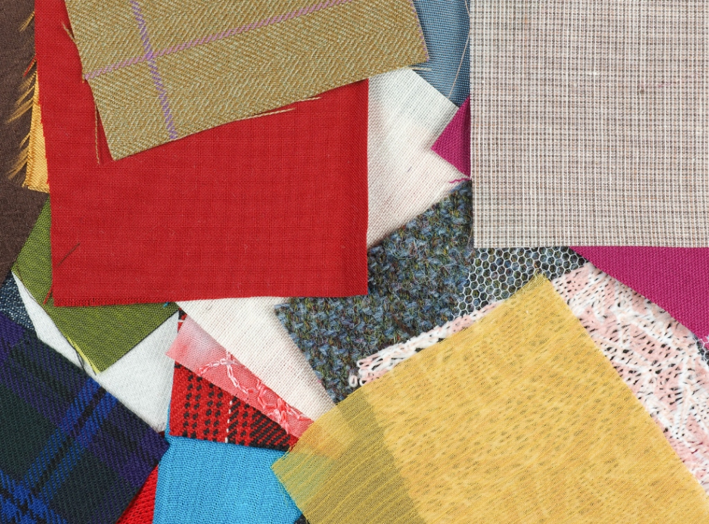

One Day Class
인생 파노라마
어린 시절부터 지금까지, 내 취향을 한 권으로 엮는 미니 스토리북

인생 파노라마
버렸는데도 아직 기억나는 옷이 있습니다
졸업식에 입었던 코트, 첫 출근날의 블라우스, 아이를 낳고 처음 산 원피스. 옷은 옷장에서 사라져도 기억에서는 사라지지 않습니다. 옷이 기억의 손잡이이기 때문입니다.
「인생 파노라마」는 어린 시절부터 지금까지를 몇 개의 장면으로 나누고, 각 장면의 그 옷을 찾아 한 권의 미니 스토리북으로 엮는 시간입니다.
사진이 없어도 괜찮습니다. 기억 속의 색과 소재를 원단 스와치와 색지로 다시 만들어 붙이면, 흐릿하던 장면이 손끝에서 선명해집니다.
다 만들고 나면 한 가지가 보입니다
내 취향은 바뀐 것이 아니라 계속 이어져 왔다는 것. 스무 살에 좋아했던 색이 지금 옷장에도 남아 있고, 그때 불편해했던 소재는 지금도 손이 가지 않습니다. 그 관통선이 보이는 순간, 앞으로 무엇을 고를지도 함께 정리됩니다.
진행 순서
기억을 꺼내고, 손으로 복원하고, 한 권으로 엮습니다.
STEP 1
인생 연표 그리기
지금까지를 5~7개 장면으로 나눕니다. 기준은 나이가 아니라 옷이 기억나는 순간입니다. 기억나지 않는 시기는 비워 두어도 좋습니다. 그 공백도 하나의 기록입니다.
STEP 2
그 옷 떠올리기
각 장면의 옷을 색 · 소재 · 실루엣으로 되살립니다. 브랜드도 이름도 기억나지 않지만 촉감은 남아 있습니다. 스와치를 만지며 가장 가까운 것을 찾습니다.
STEP 3
페이지 만들기
원단 스와치 · 색지 · 자수실 · 부자재로 장면별 페이지를 구성합니다. 그림 실력은 필요하지 않습니다. 붙이고 배치하는 것만으로 충분합니다.
STEP 4
한 권으로 엮기
완성한 페이지를 실로 꿰어 미니 스토리북으로 제본합니다. 표지 제목은 직접 붙입니다. 제목을 짓는 순간이 이 시간의 작은 정점입니다.
STEP 5
관통선 찾기
첫 장부터 마지막 장까지 반복되는 색과 소재를 표시합니다. 시간이 흘러도 바뀌지 않은 그것이 지금의 나를 설명합니다.
S.C.T.D 변화 궤적 시트
각 장면의 실루엣 · 색 · 소재 · 디테일을 협회의 S.C.T.D 코드로 정리해 드립니다. 한 시점의 분석이 아니라 수십 년의 흐름을 한 장에 담은 시트라, 협회 프로그램 가운데 이 클래스에서만 받으실 수 있습니다.
제공 내역
- 미니 스토리북 키트 — 내지 · 표지 · 제본실
- 원단 스와치 40종 이상 · 색지 · 자수실 · 부자재 일체
- 인생 연표 워크시트
- S.C.T.D 변화 궤적 시트 — 강사 작성
- 완성 스토리북 지참
이런 분께 권합니다
- ·나이가 들며 취향이 사라진 것 같은 분
- ·"예전엔 이런 것도 입었는데"라는 말을 자주 하시는 분
- ·퇴직 · 이사 · 자녀 독립 등 전환점을 지나고 계신 분
- ·기록으로 남기고 물려주고 싶은 것이 있는 분
「인형으로 만나는 어린 나」가 한 시절로 깊이 들어가는 시간이라면, 「인생 파노라마」는 전체를 한눈에 펼쳐 보는 시간입니다. 두 클래스를 이어서 들으시면 점과 선이 함께 완성됩니다.
인생 파노라마
가격: 150,000원 / 소요 시간: 120분 / 재료비·키트 포함